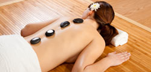

Masajes Terapeuticos

¿Qué son los masajes terapeuticos?
Los masajes terapéuticos son un enfoque de tratamiento que utiliza técnicas de masaje específicas con el propósito de aliviar dolores musculares, reducir la tensión, mejorar la movilidad y promover la curación en general. Estas terapias se basan en la idea de que la manipulación de los tejidos blandos del cuerpo puede tener efectos beneficiosos en el bienestar físico y emocional de una persona.
Los masajes terapéuticos son realizados por terapeutas especializados que tienen conocimiento de anatomía, fisiología y técnicas de masaje específicas. Estos profesionales utilizan una combinación de movimientos suaves y técnicas más profundas para trabajar en áreas específicas del cuerpo que requieren atención terapéutica.
OTRAS TECNICAS DE MASAJES
• MASAJE TAILANDES
El masaje tailandés, también conocido como Nuad Thai, es una forma única de terapia de masaje que combina acupresión, estiramientos asistidos, movilización articular y yoga suave. Originario de Tailandia, este masaje se basa en la creencia de que el cuerpo y la mente están interconectados, y busca equilibrar la energía y promover la salud integral.
Durante una sesión de masaje tailandés, el terapeuta utiliza sus manos, dedos, codos, rodillas y pies para aplicar presión en puntos específicos del cuerpo, a lo largo de las líneas de energía llamadas "sen". También se utilizan técnicas de estiramiento y movilización para mejorar la flexibilidad y el rango de movimiento.
El masaje tailandés se realiza en el suelo sobre una colchoneta, y el receptor permanece completamente vestido con ropa cómoda. La sesión se lleva a cabo en un ritmo lento y meditativo, fomentando un estado de relajación profunda y una conexión mente-cuerpo.
Los beneficios del masaje tailandés incluyen la relajación profunda, el alivio del estrés, el aumento de la flexibilidad, la mejora de la circulación sanguínea, la liberación de bloqueos energéticos y la restauración del equilibrio general. Además, se cree que el masaje tailandés promueve la alineación y el flujo de energía en el cuerpo, lo que ayuda a fortalecer el sistema inmunológico y a restaurar la vitalidad.
El masaje tailandés es una experiencia única que combina la terapia física con la práctica de la atención plena. Si buscas una terapia de masaje que promueva la relajación profunda, la flexibilidad y el equilibrio energético, el masaje tailandés puede ser una opción maravillosa.
• MASAJE CON PIEDRAS CALIENTES Y PINDAS
El masaje con piedras calientes y pindas es una terapia relajante y rejuvenecedora que combina técnicas de masaje tradicional con el uso de piedras calientes y bolsas de hierbas medicinales llamadas pindas. Esta técnica se utiliza para aliviar la tensión muscular, promover la relajación profunda y mejorar el bienestar general.
Durante una sesión de masaje con piedras calientes, se colocan piedras lisas y calentadas en diferentes puntos del cuerpo, como la espalda, los hombros y las piernas. Las piedras se calientan previamente en agua caliente y se utilizan para aplicar calor y presión en los músculos tensos. El terapeuta también utiliza movimientos suaves de deslizamiento y amasamiento con las piedras para liberar la tensión y promover la circulación sanguínea.
Por otro lado, las pindas son pequeñas bolsas de tela que contienen hierbas medicinales, como lavanda, eucalipto o jengibre, entre otras. Estas bolsas se calientan con vapor o se sumergen en aceite caliente, y se utilizan para masajear el cuerpo. Las hierbas liberan su aroma y propiedades terapéuticas durante el masaje, brindando una experiencia relajante y aromática.
El calor de las piedras y el aroma de las hierbas ayudan a relajar los músculos, aliviar el estrés, mejorar la circulación y promover un estado de bienestar general. Además, el masaje con piedras calientes y pindas puede ayudar a aliviar la tensión emocional y promover un equilibrio entre el cuerpo y la mente.
• DRENAJE LINFATICO MANUAL
El drenaje linfático manual es una técnica terapéutica suave y rítmica que se utiliza para estimular el sistema linfático y mejorar la circulación de la linfa en el cuerpo. Se basa en movimientos suaves y precisos que siguen el flujo natural de la linfa, ayudando a eliminar toxinas, reducir la retención de líquidos y promover la salud general.
Durante una sesión de drenaje linfático manual, el terapeuta utiliza movimientos suaves y repetitivos con las manos para estimular los ganglios linfáticos y los vasos linfáticos superficiales. Estos movimientos se realizan en dirección al flujo de la linfa, siguiendo un patrón específico que abarca todo el cuerpo.
El objetivo principal del drenaje linfático manual es estimular el sistema linfático para que elimine de manera más eficiente los desechos y toxinas acumulados en el cuerpo. Al mejorar la circulación linfática, esta terapia puede ayudar a reducir la hinchazón, mejorar la función inmunológica, aliviar la congestión, promover la cicatrización y mejorar el aspecto de la piel.
El drenaje linfático manual es especialmente beneficioso para aquellos que sufren de retención de líquidos, trastornos linfáticos, edema, trastornos circulatorios, cicatrices o inflamación. También se utiliza en tratamientos estéticos para mejorar la apariencia de la piel y reducir la celulitis.
Otros Masajes
Otros Masajes Terapeuticos que ofrecemos en el SPA: En ARMONIZARTE tranajamos una gran cantidad de técnicas de masajes terapeuticos, si quieres una descripcionn detallada de alguna de ellas, cliquea en alguno de los siguientes links: